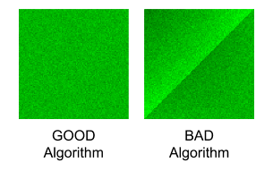

Code Jam 2014 - Round 1A
Analysis: Proper Shuffle
This problem is a bit unusual for a programming contest problem since it does not require the solution to be exactly correct. In fact, even the best solutions may get wrong answer due to random chance. That being said, there exist solutions that can correctly classify, with high probability of success, whether a permutation was generated using the BAD algorithm or the GOOD algorithm. One such solution is to generate many samples of BAD and GOOD permutations and to look at their frequency distribution according to some scoring functions. Knowing the distributions of the scores, we can create a simple classifier to distinguish the GOOD and the BAD permutations. Note that while the solution seems to be very simple, the amount of analysis needed and the number of trial and errors to produce a good scoring function are not trivial. The rest of the analysis explains the intuition to construct a good scoring function.
What makes a GOOD permutation?
If a permutation of a sequence of N numbers is GOOD, then the probability of each number ending up in a certain position in the permutation is exactly 1 / N. In the GOOD algorithm, this is true for every step. In the first step, the probability of each number ending up in the first position is exactly 1 / N since the length of the sequence is initially N. Now the number in the first position is fixed (i.e., it will not be swapped again in the next steps), we can ignore it in the second step and only consider the remaining sequence of N - 1 numbers. Whichever number that gets chosen in the second step did not get chosen in the first step ((N - 1) / N chance), and got chosen in the second step (1 / (N - 1) chance), so every number has a 1 / N chance of ending in the second position. Continuing this logic, in the end, every number has a uniform 1 / N probability to end up in any position in the permutation sequence.
Why is the BAD algorithm BAD?
Let’s examine the BAD algorithm. At first, the BAD algorithm may look “innocent” that in step i it picks an element at random position and swaps it to the element at position i. However, a deeper look will reveal that the direction in which i is progressing makes the resulting permutation become BAD (i.e., it is not uniform). To see this, imagine we are currently at step i and we pick a random number X at position j where j happens to be less than i. Then X can never be swapped to lesser position than i in the next steps. The number X can only be swapped to higher positions in the permutation. This creates some bias in the permutation.
Let’s examine the frequency of seeing the number i that ends up in position j in the permutation for all i,j. We illustrate the frequency in the figures below. The x-axis (from left-to-right) is the original position of the numbers (from 0 to N - 1). The y-axis (from bottom-to-top) is the position of numbers in the permutation generated by the algorithm (from 0 to N - 1). For this illustration, we use N = 100. We run each algorithm (the GOOD and the BAD separately) 20K times and record the event that number i (in the original position) ends up in position j (in the permutation). The intensity of the pixel at position x=i, y=j represent the frequency of the events. The darker the color represent the higher frequency of occurrence.
We can observe that the GOOD algorithm uniformly distributes the numbers from the original positions to the resulting permutation positions. While the BAD algorithm tends to distribute the lower numbers in the original positions to the higher positions in the permutation (notice the darker region on the top left corner).
A Simple Classifier
With the above insights, we can devise a simple scoring function to classify the BAD permutation by counting the number of elements in the permutation that move to lower positions compared to its original position. See the following pseudo-code for such a scoring function:
def f(S):
score = 0
for i in 0 .. N-1:
if S[i] <= i:
score++
return score
The scoring function f takes in a permutation sequence S of length N and returns how many numbers in the permutation sequence that ends up at position that is less than or equal to its original position. If the permutation sequence S is generated by the GOOD algorithm, we expect that the score should be close to 500 for N = 1000. If S is generated by the BAD algorithm, we expect that the score should be significantly lower than 500 (since the lower numbered elements tends to move to higher position). If we run 10K samples for each algorithm and plot the frequency distribution of the scores, we will get the following graph:

The GOOD algorithm produces samples with scores clustered near 500 while the BAD algorithm produces samples with scores near 472. Knowing these scores, we can build a very simple classifier that decides whether a given permutation sequence S is generated by the GOOD or the BAD algorithm with high probability. We can simply check the score of f(S) whether it is near 472 (BAD) or 500 (GOOD), as depicted in the following pseudo-code:
if f(S) < (472 + 500) / 2:
S is produced by the BAD algorithm
else:
S is produced by the GOOD algorithm
How accurate is the classifier?
The good thing about being a programmer is that we do not always need formal proofs. We can roughly guess the accuracy of the classifier by generating a number of GOOD / BAD permutations each with 50% probability and check how many permutations are correctly classified using our simple classifier. According to our simulation, the simple classifier achieves around 94.05% accuracy. The simple classifier is good enough to correctly solve 109 test cases out of 120 test cases: this will happen in roughly 94.58% of all inputs. In the unlucky situation that your input is in the other 5.42%, you can download another one. 5.42% seems to be a lot to be given to chance though. What if you were only allowed one submission? In the next section we'll explore one idea out of many that offer higher chances of success.
Naive Bayes Classifier
Let S be the input permutation. We want to find P(GOOD | S), the probability that the GOOD algorithm was used, given that we saw the permutation S. By Bayes’ theorem it follows that:P(GOOD | S) = P(S | GOOD) * P(GOOD) / (P(S | GOOD) * P(GOOD) + P(S | BAD) * P(BAD))
where:
- P(S | GOOD) is the probability that S is generated by the GOOD algorithm
- P(S | BAD) is the probability that S is generated by the BAD algorithm
- P(GOOD) is the probability that the permutation is chosen from the GOOD set
- P(BAD) is the probability that the permutation is chosen from the BAD set
Since we know that P(GOOD) and P(BAD) is equally likely since each algorithm has the same probability to be used, then we can simplify the rule to:
P(GOOD | S) = P(S | GOOD) / (P(S | GOOD) + P(S | BAD))
If P(GOOD | S) > 0.5, it means that the permutation S is more likely generated by the GOOD algorithm. By substituting P(GOOD | S) with the right hand side of the rule in P(GOOD | S) > 0.5 and performing some algebraic manipulation, we can further simplify the expression to P(S | GOOD) > P(S | BAD).
We know the exact value for P(S | GOOD) is 1/N! since there are N! possible permutations. Hence, we only need to find P(S | BAD). If we can find P(S | BAD), we will have an optimal algorithm. Unfortunately, we do not know how to efficiently compute P(S | BAD) precisely. The best algorithm we know is intractable for large N = 1000.
Nevertheless, we can borrow an idea from machine learning and make a simplifying Naive Bayes assumption: let’s assume that the movement of each element is independent. Now we can approximate P(S | BAD):
P(S | BAD) ≈ P(S[0] | BAD) * P(S[1] | BAD) * ... * P(S[N-1] | BAD)
where P(S[0] | BAD) is the probability that the first element in a random permutation generated by BAD is in fact S[0]. Without the independence assumption, we would have terms like P(S[1] | BAD + S[0]), which means "the probability that the second element is in fact S[1] given that BAD is used to generate the permutation and that the first element is S[0]". Naive Bayes allows us to remove the italicized assumption, which makes the calculation tractable (but not completely accurate).
To be fair, we should make the same simplifying assumption for P(S | GOOD). Luckily, this is easy; in the GOOD algorithm, each element has a 1 / N chance of moving to each position, so P(S | GOOD) = 1 / NN regardless of what S we are given.
Now, let’s see how we can implement the Naive Bayes classifier. Let Pk[i][j] be the probability that number i ends up at position j after k steps of the BAD algorithm. We are interested in the probabilities where k = N (i.e., after N steps have been performed). We can compute Pk from Pk-1 in O(N2) time by simulating all possible swaps. P0 is easy; nothing has moved, so we just have the identity matrix. See the pseudo-code below. Pk[i][j] is the prev[i][j] variable which will contain the probability of number i ends up at position j after k steps generated by the BAD algorithm.
prev[i][i] = 1.0 for all i, otherwise 0.0 // An identity matrix.
pmove = 1.0 / N // Probability of a number being swapped.
pstay = 1.0 - pmove // Probability of a number not being swapped.
for k in 0 .. N-1:
for i in 0 .. N-1:
next[i][k] = 0
for j in 0 .. N-1:
next[i][k] += prev[i][j] * pmove // (1)
if j != k:
next[i][j] = prev[i][j] * pstay +
prev[i][k] * pmove // (2)
Copy next to prev
Note for (1): P[i][k] for the next step is equal to: (P[i][j] in the previous step) * (move probability to k). Note for (2): P[i][j] for the next step is equal to: (P[i][j] in the previous step) * (staying probability at j) + (P[i][k] in the previous step) * (move probability to j).
The above algorithm runs in O(N3). It may take several seconds (or minutes if implemented in a slow scripting language) to finish. However, we can run this offline (before we download the input), and store the resulting probability matrix in a file. Note that the above algorithm can also be optimized to O(N2) if needed. See Gennady Korotkevich's solution for GCJ 2014 Round 1A for an implementation.
Next, we compute the approximation probability of P(S | BAD) as described previously.
bad_prob = 1.0
for i in 0 .. N:
bad_prob = bad_prob * prev[S[i]][i]
Finally, to produce the output, we compare it with P(S | GOOD) and see which one is greater.
good_prob = 1.0 / N^N
if good_prob > bad_prob:
S is produced by the GOOD algorithm
else:
S is produced by the BAD algorithm
Note that the pseudo code above is dealing with very small probability that may cause underflow in the actual implementation. One way to avoid this problem is to use sum of the logarithm of the probabilities instead of the product of the probabilities.
Empirically, the Naive Bayes classifier has a success rate of about 96.2%, which translates into solving at least 109 cases correctly out of 120 in 99.8% of all inputs.
Finally, in this editorial we described two methods to solve this problem. There are likely other solutions that perform even better and we invite the reader to try come up with such solutions.